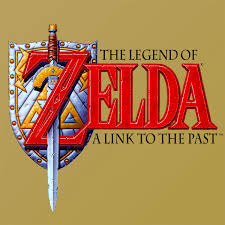

Olá, usuário!

95/100 - Metacritic
The Legend of Zelda: A Link to the Past, também conhecido como Zelda no Densetsu: Kamigami no Triforce (ゼルダの伝説 神々のトライフォース, Zeruda no Densetsu: Kamigami no Toraifōsu) no Japão e A Lenda de Zelda: Um Elo com o Passado no Brasil, é um jogo eletrônico de ação-aventura desenvolvido e publicado pela Nintendo para o Super Nintendo Entertainment System. É o terceiro jogo da série The Legend of Zelda, e foi lançado em 1991 no Japão e em 1992 na América do Norte e Europa. O lançamento foi um sucesso comercial e de crítica, sendo um marco para a Nintendo e é considerado como um dos melhores jogos de todos os tempos, inclusive pelo seu enredo, e vendeu mais de quatro milhões de cópias em todo mundo.
Trama e Jogabilidade
A trama de A Link to the Past concentra-se no herói Link em uma jornada para salvar a terra de Hyrule, impedir a volta de Ganon e libertar as sete donzelas descendentes dos antigos sábios. A história é uma prequência de jogos anteriores da série, envolvendo os ancestrais de Link e da princesa Zelda.
O jogo usa uma perspectiva de cima para baixo 3/4 semelhante ao do original The Legend of Zelda, deixando para trás os elementos de side-scrolling de Zelda II: The Adventure of Link. A Link to the Past introduziu elementos para a série que ainda são comuns hoje em dia, tais como o conceito de um mundo alternativo ou paralelo, a Master Sword e outras novas armas e itens.
Relançamentos e Sequência
Foi mais tarde lançado para o Game Boy Advance em 2002 (junto com o título desenvolvido pela Capcom, The Legend of Zelda: Four Swords), e disponibilizado para download no serviço Virtual Console do Wii no começo de 2007 e no Wii U em janeiro de 2014. O jogo foi adicionado como parte da biblioteca do Nintendo Switch Online em 2018.
Uma sequência direta, intitulada de The Legend of Zelda: A Link Between Worlds, foi lançado para o Nintendo 3DS em novembro de 2013. O jogo foi dirigido por Takashi Tezuka, produzido por Shigeru Miyamoto, escrito por Kensuke Tanabe e a trilha sonora foi composta por Koji Kondo.